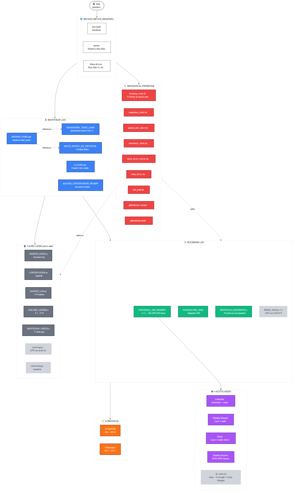
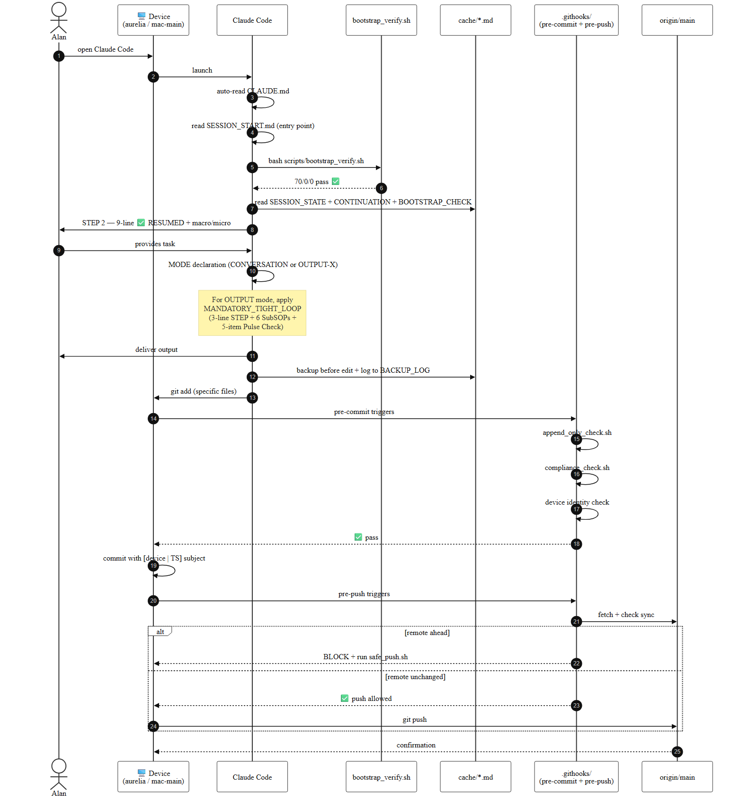
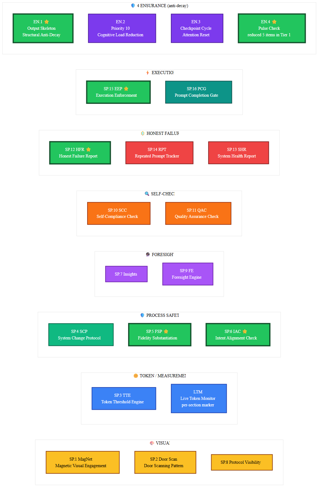
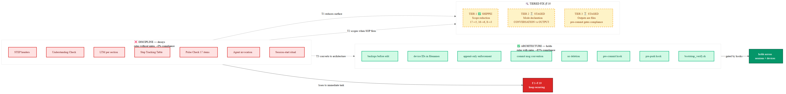
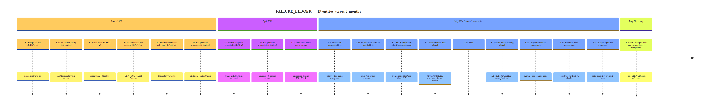
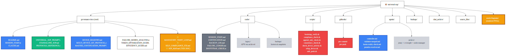

🗺️ SOP Map
Visual reference for the entire Universal Output SOP system. Click any diagram to zoom.
Overview
The Universal SOP is a 6-layer system gated by mechanical enforcement. The full SOP defines 20 protocols (16 SubSOPs + 4 Ensurance); per F.19 / MANDATORY_TIGHT_LOOP.md, only 6+1 are mandatory for operational use.
1 Full System Map
Six layers (Bootstrap → Rulebook → Protocols → Agents → Cache) gated by Mechanical Enforcement. Every file, script, hook named.

View Mermaid source
See diagrams_src/01_system_map.mmd in the repo2 Session Lifecycle
Sequence from open-Claude-Code → bootstrap → output → commit → push, including every hook gate.

3 20 Protocols Grouped By Function
All 16 SubSOPs + 4 Ensurance organized by what they do. ⭐ marks the 6+1 MANDATORY TIGHT LOOP — the Tier 1 fix from F.19. The other 13 stay reference-only.

4 Discipline vs Architecture (The F.19 Insight)
Why some rules survive and others decay. Discipline-style rules (red) achieve ~0% compliance; architectural rules (green) hold at ~85%. The 3-tier fix bridges the gap by converting discipline to architecture.

5 Failure Ledger Timeline (F.1 → F.19)
Two months of failures + fixes. Recent failures (F.14+) got mechanical fixes that hold. Earlier failures (F.1–F.9) got convention fixes that re-failed. F.19 is the meta-insight that explains the pattern.

6 Repository File Structure
Where everything lives. Stars (⭐) mark the newest additions: MANDATORY_TIGHT_LOOP.md, SELF_COMPLIANCE_FIX.md, SOP_MAP.md, SOP_MAP.html.

Quick Reference — What To Read When
| Situation | Read |
|---|---|
| Fresh session, any device | SESSION_START.md → MANDATORY_TIGHT_LOOP.md |
| New device first-time | SESSION_START.md + DEVICE_REGISTRY.md + bash scripts/setup_device.sh <name> |
| Producing an output | MANDATORY_TIGHT_LOOP.md (3-line STEP + 6 SubSOPs + 5-item Pulse Check) |
| Publishable deliverable | MANDATORY_TIGHT_LOOP.md + UNIVERSAL_SOP_PROMPT.md for extras |
| Protocol lookup | PROTOCOLS_REFERENCE.md |
| Investigate a failure pattern | cache/FAILURE_LEDGER.md (F.1 – F.19) |
| Understand the F.19 insight | SELF_COMPLIANCE_FIX.md |
| Multi-device sync question | MULTI_DEVICE_GIT_PROTOCOL.md |
| Restore a prior file state | cache/BACKUP_LOG.md → find the row → grab from backups/ |
| External (non-Alan) consumer | STANDALONE_SOP.md (MIT, self-contained) |
Glossary
| Term | Meaning |
|---|---|
| SubSOP | Sub-Standard-Operating-Procedure. 16 protocols SP.1–SP.16. |
| Ensurance | 4 anti-decay components EN.1–EN.4 that prevent compliance erosion over long sessions. |
| Tight Loop | The 6+1 protocols selected as mandatory for every operational OUTPUT (F.19 Tier 1). |
| Tier (F.19 context) | One of three architectural moves to fix the discipline/architecture gap. Tier 1 shipped 2026-05-21; Tier 2 + Tier 3 staged. |
| Tier (SOP context) | QUICK / STANDARD / COMPLEX — the rigor level of an output. Different from F.19 tiers. |
| Pulse Check | Pre-send mechanical sweep at the end of an output. Original: 17 items. Reduced (Tier 1): 5 items. |
| HFR | Honest Failure Report — root cause + permanent fix produced in the same output that fails. |
| F.X | Failure-Ledger entry X. Cumulative immutable log of every system failure + permanent fix. |
| Mechanical enforcement | Rule enforced by a script or hook, not by Claude self-discipline. The category that actually holds per F.19. |
| F4/F5/F8/etc. (fusion) | Operations that merged multiple SOP components to reduce surface area. F4 merged Oversight + Cache Manager → Controller. F5 archived Jenny. F8 merged RPT_LOG + HFR → FAILURE_LEDGER. |